Basics
Before you start
Your LinkRetro receiver turns modern Bluetooth controllers, keyboards and mice into signals an old console understands (PS2, N64, Dreamcast, PS1 and so on). This web tool is where you set it up.
Your computer must have Bluetooth: built into most laptops, or added with a USB Bluetooth adapter on desktops. Without Bluetooth the browser cannot see the receiver at all.
You need Chrome or Edge — desktop or Android. Safari on iPhone / iPad does not support Web Bluetooth, so these pages will not work there.
Turn Bluetooth on in the system settings (Windows: Settings → Bluetooth & devices; macOS: Control Centre) and allow the browser Bluetooth prompt when it appears.
Disconnect your controllers from the receiver before connecting (let them sleep or turn them off). Otherwise the browser may fail to pair.
Click Select Device in the top bar and pick the device that starts with BlueRetro_. Once connected the button shows the device name and firmware version; click it to see the address or disconnect.
If the receiver never appears: close other apps that use Bluetooth, move closer, reload the page and try again. A USB Bluetooth adapter on a desktop works just as well as built-in Bluetooth.
Most fields are greyed out until you connect. That is normal: the settings live on the receiver, so it has to be connected first.
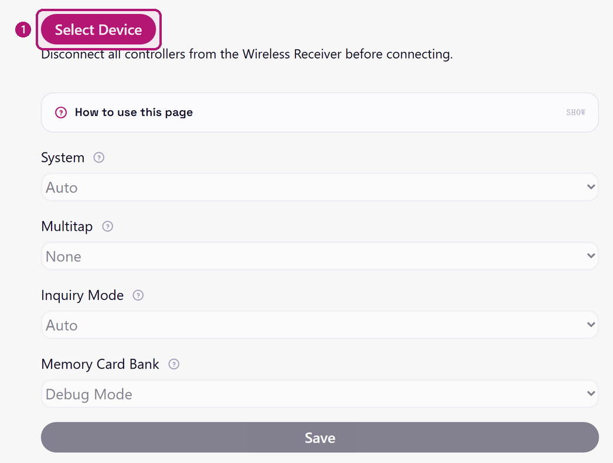
Inputs and outputs
Input means “which player’s controller goes into the receiver”. Output means “which port on the console the receiver is plugged into”.
Single controller, single console port: Input #1 and Output #1. That covers most single-player setups.
You only need other numbers for same-screen multiplayer or a multitap. Getting the number wrong looks like “the controller responds but the console ignores it”.
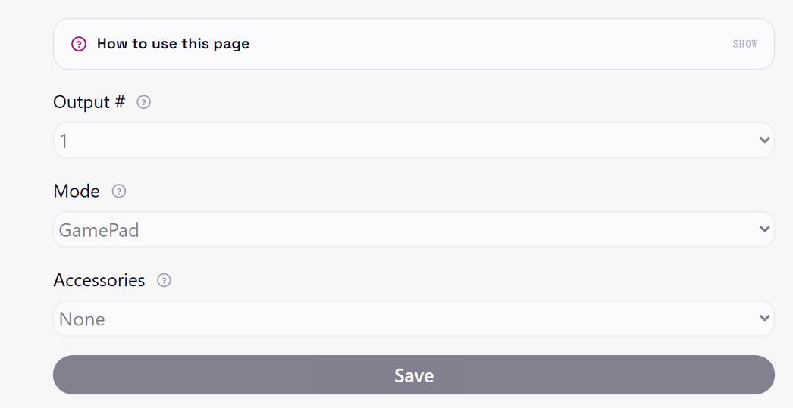
Three layers: Global / Console / Game ID
The same setting can live in three places: Global (shared by every game), Console (per console), or Game ID (per individual game).
The three buttons at the top of a page choose which layer you are reading and writing. Saving only touches the selected layer.
To work per console or per game: put a game in the console, disconnect the controllers, switch to Console or Game ID and press the refresh button so the receiver can read the console / game ID.
Beginner advice: get one good setup working in Global first, then override only the games that need it.
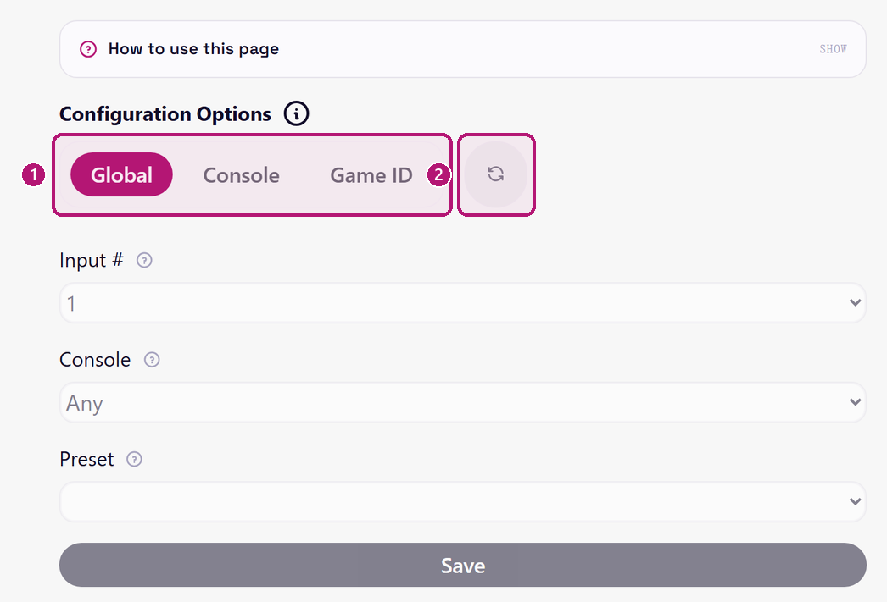
Button mapping: presets and custom
There are two ways: Presets writes a whole ready-made mapping in one go; Custom lets you edit entries one by one.
One entry is: source button (on your controller) → destination button (what the console receives), plus a few feel parameters.
Max is the value sent when the button is fully pressed; Threshold is the point where it counts as pressed; Deadzone ignores small stick movement near the centre; Turbo repeats the press; Scaling is the stick curve; Diagonal compensates diagonals.
Common fixes: X / O swapped → change Source and Destination in Custom; stick drifting on its own → raise Deadzone; need rapid fire → set Turbo.
Note: Remapping only changes how buttons are interpreted. It does not change which console the receiver pretends to be — that is System on the Global page.
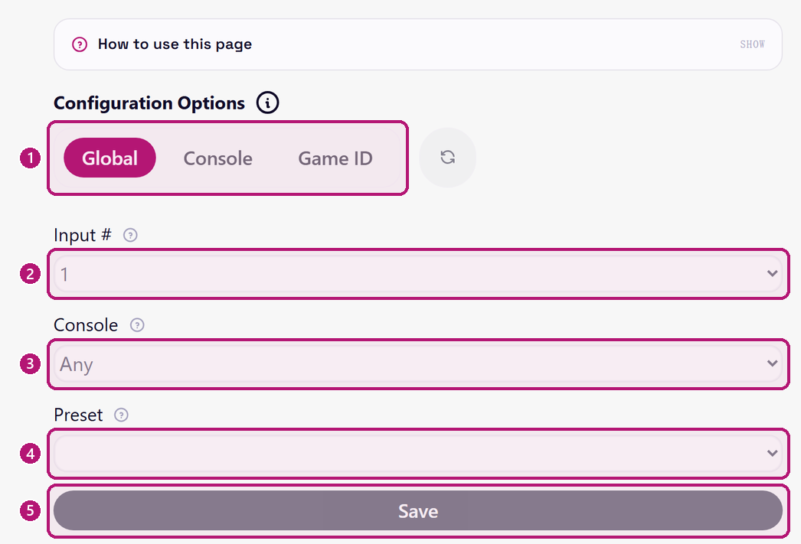
Memory cards
The receiver can act as a virtual memory card: N64 Controller Pak (.MPK), Dreamcast VMU (.BIN) and PS1 memory card (.BIN).
Read saves what is on the card to a file; Write puts a file from your computer back on the card; Format wipes and re-initialises the card.
Writing overwrites whatever is on the card. Do a Read first to keep a backup — then you can always write it back.
These pages have no slot picker: the receiver works on the card it currently sees. If several are attached, leave only one connected while you work.
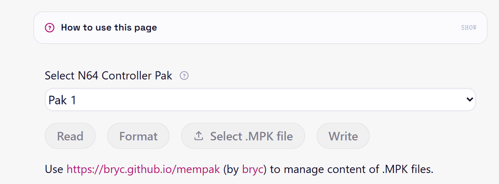
Firmware update
Two routes: USB Update (cable, desktop browser) and OTA Update (wireless over Bluetooth, works on phones too).
USB uses the chip’s download mode and can rescue a receiver that no longer connects. OTA is for a receiver that still works and pairs.
OTA only accepts the app-only image; full packages must go over USB. The built-in firmware list on the site is already split by type — just pick from the dropdown.
A Bluetooth update can take several minutes. Do not disconnect, close the page, or power off the receiver while the progress bar is moving — the page warns you and asks before closing.
When writing finishes the page shows a green confirmation with its own message; the receiver restarts with the new firmware and you can disconnect. If it fails, reconnect and retry, or use USB Update for a full recovery.
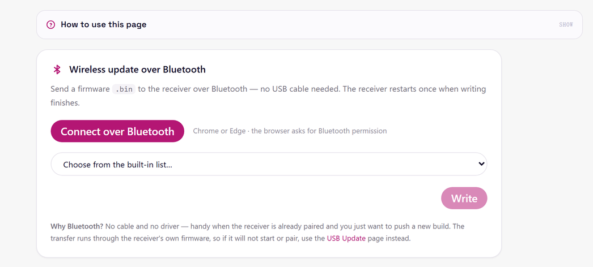
System pages: Files / Manage / Debug
Files lists the configuration files stored on the receiver. You can delete them one by one to free space.
Manage holds system commands: Deep Sleep for low-power sleep, Reset to reboot (keeps settings) and Factory Reset to wipe everything back to defaults.
Debug downloads a trace file. When you report a problem, send that file too — it helps far more than a description.
Note: Factory Reset wipes every mapping and memory-card setting. Make sure you really want that before using it.
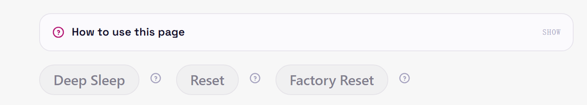
Page by page
Global /controller/global
Decides which console the receiver pretends to be, how many controllers it accepts and which memory-card bank it serves. Start here on a new setup.
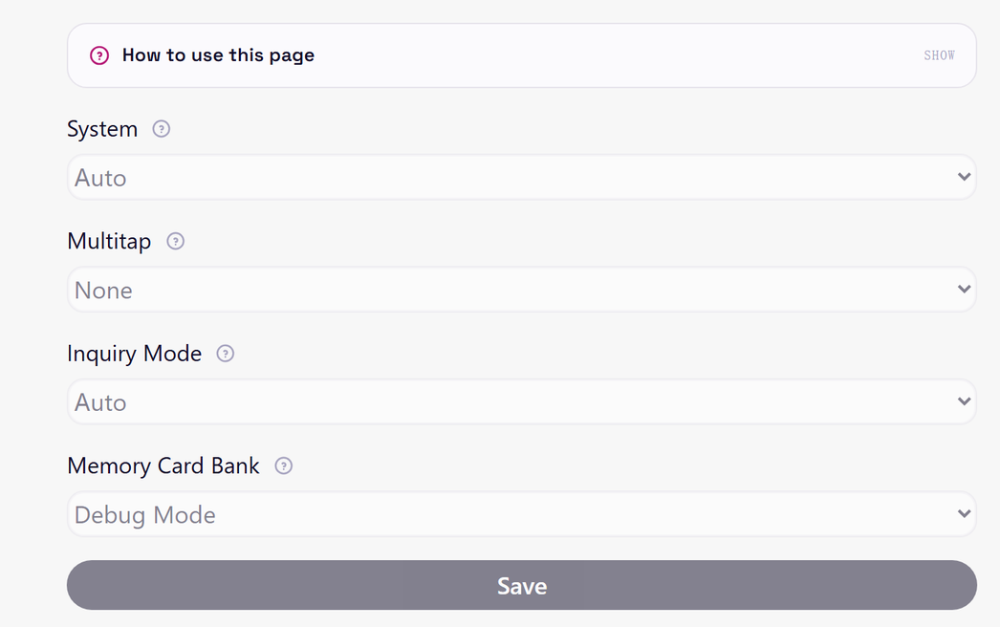
How to use it
- Beginners can just use: System = Auto, Multitap = None, Inquiry Mode = Auto, Memory Card Bank = Bank 1.
- Press Save at the bottom; nothing changes on the receiver until you do.
- If the console shows no picture, first check the video cable is on the receiver output and the receiver has power.
What each option does
- System
- Which console the receiver emulates. Auto detects it; if you always use one console, leave it on Auto.
- Multitap
- Multi-player adapter mode (Slot 1 / Slot 2 / Dual / Alt, depending on the console). Leave it on None unless you need four ports.
- Inquiry Mode
- Auto keeps scanning for paired controllers. Manual waits until you press a button on the controller — saves power and avoids accidental connections.
- Memory Card Bank
- Memory-card bank: switching it is like swapping to another card. Use Bank 1 normally; Debug Mode is for diagnostics only.
- A grey Save button means the receiver is not connected yet, or a write is already running.
Output /controller/output
Sets what each console-side port looks like to the console, and whether it offers a memory card and rumble.
How to use it
- Single controller: Output # 1, Mode GamePad.
- Pick Accessories = Rumble for rumble, Memory for a memory card, or Both for both.
- Press Save to apply.
What each option does
- Output #
- Which console-side port this applies to. Single-port setups use 1; you only change it for a multitap.
- Mode
- What the port looks like: GamePad, GamePadAlt (alternative layout), Keyboard or Mouse.
- Accessories
- Whether this port offers a memory card and/or rumble: None, Memory, Rumble, or Both.
- Keyboard/mouse play needs both places: set Mode to Keyboard or Mouse here, then pick a keyboard/mouse preset on the Presets page.
N64 Controller Pak /controller/n64
Read and write N64 Controller Pak images (.MPK): back one up to your PC, restore one, or wipe it.
How to use it
- Pick Pak 1–4 (four virtual slots).
- Press Read first: it saves the card contents to your PC as .MPK.
- To restore: choose an .MPK file then Write. To wipe: Format.
What each option does
- Pak
- Which Controller Pak slot to work on — the same 1–4 numbering the game shows.
- Read
- Reads the card and downloads it as an .MPK file. Do this before writing, so you have a backup.
- Format
- Wipes and re-initialises the card. Everything on it is lost.
- Select .MPK file
- Choose an .MPK file from your PC, ready to write to the selected slot.
- Write
- Writes the chosen .MPK into the slot. It overwrites what is on the card.
- Do not unplug or close the page while reading or writing.
- The card is transferred in small blocks over Bluetooth, so the progress bar is slow on purpose — that is normal.
DC VMU Manager /controller/dcvmu
Read and write Dreamcast VMU images (.BIN, 200 blocks): back up saves or restore one from your PC.
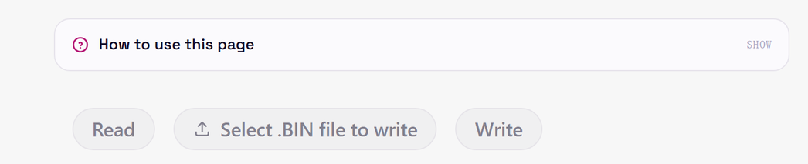
How to use it
- Press Read to save the current VMU as a .BIN.
- Choose a .BIN file, then Write to put it back.
- Always Read first — writing replaces the whole card.
What each option does
- Read
- Downloads the VMU the receiver currently sees as a .BIN file.
- Select .BIN file
- Pick a VMU image (.BIN) from your PC to write.
- Write
- Writes the chosen .BIN to the VMU, replacing its contents.
- There is no slot picker here: the receiver works on the VMU it sees. If you have several, leave only one attached.
PS1 Memory Card /controller/ps1mc
Read and write PlayStation memory cards (.BIN): export a backup, restore one, or format the card.
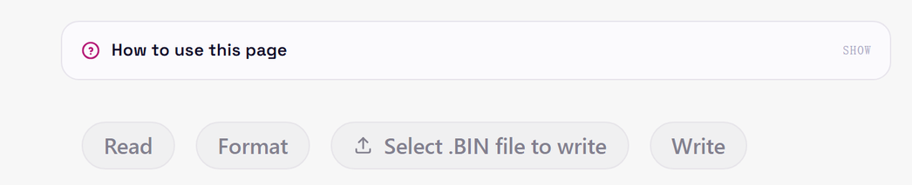
How to use it
- Read first to make a backup.
- To restore saves: pick a .BIN then Write.
- To wipe it: Format (all 15 blocks are cleared).
What each option does
- Read
- Downloads the current memory card as a .BIN file.
- Format
- Formats the card: every save is erased, only the header remains.
- Select .BIN file
- Pick a PlayStation memory-card image from your PC.
- Write
- Writes the image to the card, replacing its contents.
Presets /controller/presets
Apply a whole ready-made mapping to one input in a single step instead of editing entries one by one.
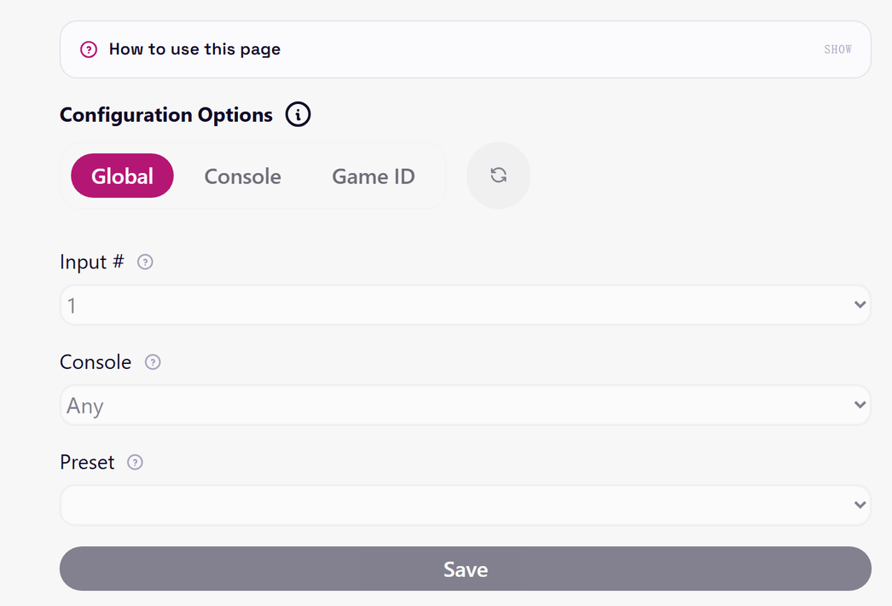
How to use it
- Pick the config layer at the top; beginners should use Global.
- Choose the controller number under Input #; single player is 1.
- Console only filters the list; pick one. Then pick a preset. Beginners: Console = Default, Preset = Default Gamepad only.
- Press Save: the whole mapping replaces that input’s current one.
What each option does
- Configuration Options
- Which layer to write to: Global (all games), Console (per console) or Game ID (per game). For the last two, put a game in and disconnect controllers, then press refresh.
- Input #
- Which controller this mapping is for. Single player: 1 — match the port you actually use.
- Console
- This only filters the preset list; it does not change where the config is stored. If there is no preset for your console, use Default.
- Preset
- Which preset to apply. Save stays disabled until you pick one; saving replaces the mapping rather than adding to it.
- Presets replaces everything. To change a single button, use Custom instead.
- The dropdowns start empty while the preset list loads — give it a second, or reload if it stays empty.
Custom mapping /controller/buttons
Edit mappings entry by entry — for fine tuning, fixing one game, or tweaking a few buttons on top of a preset.
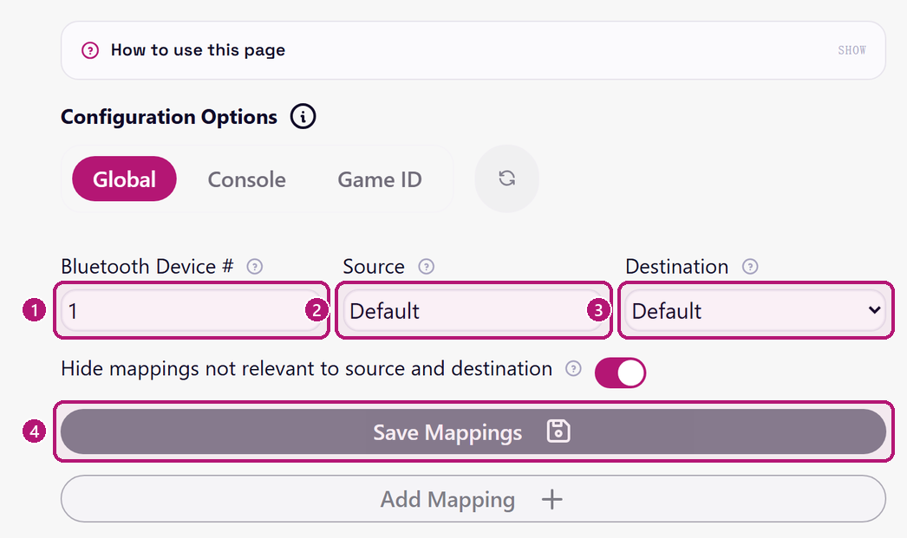
How to use it
- Pick the layer and controller number first (beginners: Global, device #1).
- Source / Destination choose the device type, which decides the button names available per row.
- For each row, set Source (controller button) and Destination (console button).
- Press Save Mappings to write; Add Mapping appends an entry.
What each option does
- Configuration Options
- Same as on Presets: Global / Console / Game ID picks which layer this page reads and writes.
- Bluetooth Device #
- Which controller this mapping belongs to. Single player: 1.
- Source
- The input device type (gamepad / keyboard / mouse). It decides which source button names each row offers.
- Destination
- The device type the console side should look like. It decides the destination button names.
- Hide mappings not relevant
- Shows only entries relevant to the chosen source/destination types. It affects what you see, not what gets saved.
- Save Mappings
- Writes the whole current mapping set to that input on the receiver.
- Add Mapping
- Appends a blank entry; fill in its source and destination buttons.
- Source button
- Which button on your controller triggers this mapping.
- Destination button
- Which button the console receives — this is where you fix swapped X / O.
- Destination ID
- Which output port this entry goes to in multi-controller setups. Keep 1 for single player.
- Max
- The maximum value sent at full press. Default 100; rarely needs changing.
- Threshold
- How far the button must travel to count as pressed. Lower triggers earlier; raise it if a light touch fires by accident.
- Deadzone
- How much movement near the stick centre is ignored. Raise it if the stick drifts; lower it if it feels sluggish.
- Turbo
- Holds the button down as repeated presses at a chosen rate; Disable turns it off.
- Scaling
- The stick response curve from centre to edge. Linear is the easiest to predict; others suit racing or flight games.
- Diagonal
- Compensates diagonal output when two directions are held — worth trying if special moves drop inputs.
- Start from a Preset, then tweak a few entries here. Building a full set from scratch takes a long time.
Files /system/files
Configuration files stored on the receiver. Delete them one by one to free space.
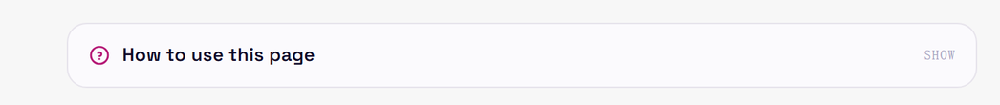
How to use it
- Once connected the list loads by itself; recognised games show their name after the file name.
- Press the bin icon to delete a file — this cannot be undone.
What each option does
- File list
- Config and save files on the receiver. The list is empty when nothing is connected — that is normal.
- Delete
- Deletes the file permanently. If unsure, leave it alone or export a backup first.
Manage /system/manage
System commands for the receiver: sleep, reboot and factory reset.
How to use it
- You normally do not need this page.
- If the receiver stops responding, try Reset — it reboots and keeps your settings.
- Only use Factory Reset when nothing else helps; every setting has to be redone afterwards.
What each option does
- Deep Sleep
- Puts the receiver into low-power sleep — useful on battery or for long storage. A button press or power cycle wakes it.
- Reset
- Reboots the receiver. Settings and saves are kept — same as unplugging it.
- Factory Reset
- Wipes every setting, mapping and memory-card config back to defaults. Cannot be undone.
USB Update /system/update
Flash firmware over the USB cable. It uses the chip’s download mode, so it can rescue a receiver that no longer connects.
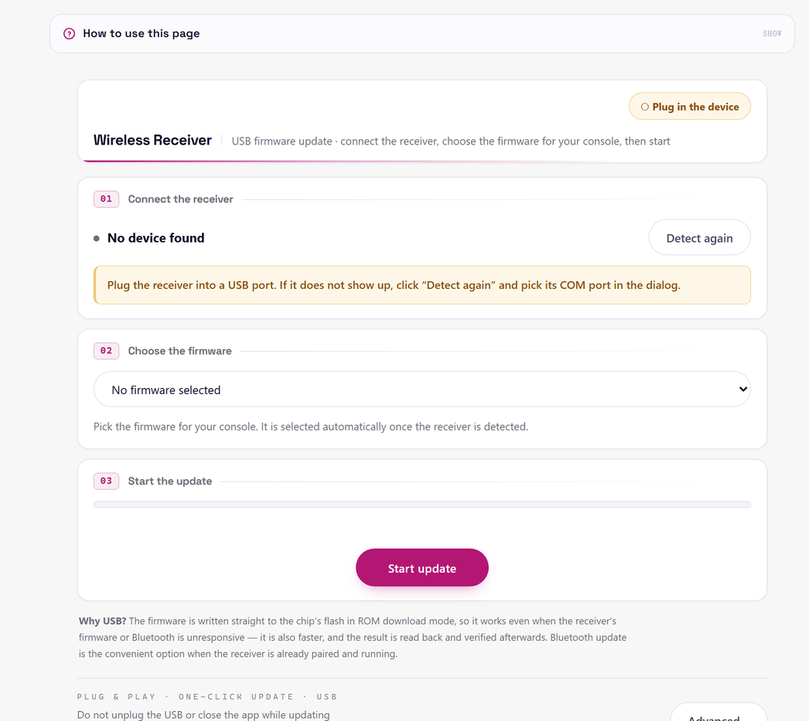
How to use it
- Use desktop Chrome or Edge for this page.
- Plug the receiver into the PC with a USB data cable; the page finds the serial port.
- Pick the firmware from the built-in list, then start the update.
- The receiver reboots when done. Do not unplug while it writes.
What each option does
- Embedded updater
- This is the standalone updater embedded in this site; it uses Web Serial. Phones, Safari and Firefox have no Web Serial, so they see a fallback message instead.
- Fallback notice
- USB flashing is not available in this browser. If the receiver still connects, use the OTA Update page instead.
- On Windows the first connection may need a serial driver installed (usually CH340 or CP210x).
OTA Update /system/ota
Flash firmware wirelessly over Bluetooth — works on phones too. It only accepts the app-only image; full packages go on the USB page. Keep the page open until the update finishes.
How to use it
- Click Connect over Bluetooth to connect the receiver.
- Pick firmware from the built-in list; the newest is tagged ✓ Latest version.
- Press Write. A Bluetooth update can take several minutes: do not disconnect, close the page, or power off the receiver while the bar is moving.
- When it finishes a green confirmation appears and the receiver restarts. You can disconnect then; if it fails, reconnect and retry or use USB Update.
- If the receiver no longer connects at all, use USB Update instead — OTA cannot reach it.
What each option does
- Firmware
- Built-in firmware list, already grouped by model and version. After connecting it preselects the right one for this receiver.
- Write
- Writes the selected firmware to the receiver. It can take several minutes; keep the page open and do not cut power while it runs. The page warns you and shows a confirmation when done.
- Model memory
- If the model cannot be detected you pick once; the choice is remembered per Bluetooth address and preselected next time.
Debug /system/debug
Download the receiver’s debug trace for troubleshooting or support.
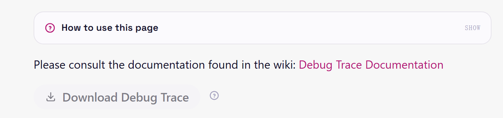
How to use it
- Reproduce the problem, then come back to this page.
- Click Download Debug Trace to save the file.
- Send the file together with a description of what happened.
What each option does
- Download Debug Trace
- Downloads the receiver’s debug log as a text file. It contains no personal data.